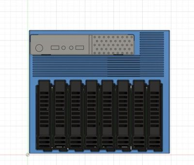
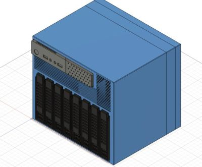
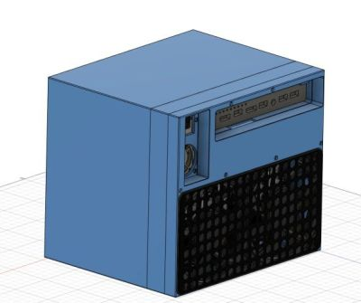
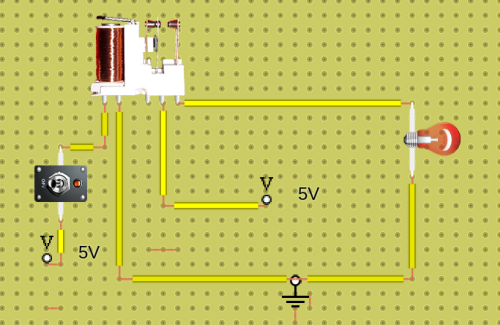
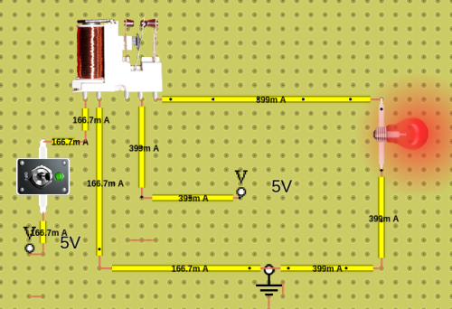
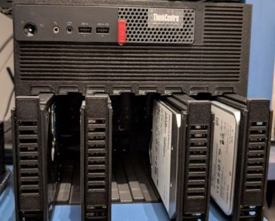
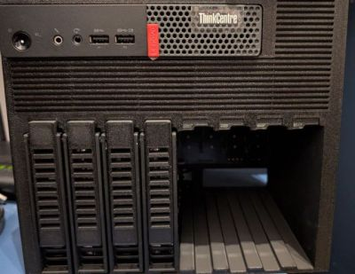
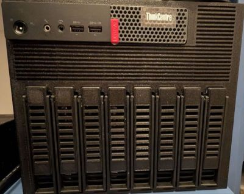

Modificaciones en el servidor - 3
Este nuevo artículo no sabía si llamarlo Modificaciones en el servidor - 3 o La imaginación humana no tiene límites, porque una vez que hayáis leído este artículo pensaréis lo mismo que yo.
Como recordaréis, en este artículo os comentaba que después de los últimos cambios, mi servidor había quedado de la siguiente manera:
- Intel Xeon e2286M
- 32Gb de RAM
- 4 HDD’s
- 1 HDD de 18Tb
- 1 HDD de 16Tb
- 1 HDD de 12Tb
- 1 HDD de 1Tb
- Este lo uso para copias de seguridad.
Lo más importante es saber el porqué de este cambio. Al principio todo iba correctamente, aunque había momentos en que notaba que los discos duros me hacían el tonto, como si se desconectasen o se reiniciasen, pero como me lo hacía pocas veces, pues no le hacía mucho caso, porque como pasaba poco, pues nada.
La cosa cambió cuando le añadí un nuevo HDD Seagate Exos X20 SATA (gracias a HomeLabs y sus conjuntas 😈), quedando el servidor con la siguiente configuración:
- 5 HDD’s
- 2 HDD de 18Tb
- 1 HDD Toshiba
- 1 HDD Seagate Exos
- 1 HDD de 16Tb
- 1 HDD de 12Tb
- 1 HDD de 1Tb
- 2 HDD de 18Tb
Aquí se hicieron más seguidos y peligrosos los problemas que había visto con anterioridad. Ya eran más importantes porque estos pasaban cada dos por tres: los HDD’s se reiniciaban sin motivo aparente, y sobre todo cuando se hacían copias de muchos archivos a la vez o de archivos muy pesados. Y, para que veáis lo peligroso que era, a veces el array de unRAID se desmontaba, quedando todos los discos duros desactivados, con el consiguiente peligro para la integridad de la información.
Así que tuve que desconectar algunos HDD. Al final, el servidor quedó de la siguiente manera:
- 3 HDD’s
- 2 HDD de 18Tb
- 1 HDD Toshiba
- 1 HDD Seagate Exos
- 1 HDD de 12Tb
- 2 HDD de 18Tb
nota: Como veis, peor de lo que estaba al principio, hablando de espacio de almacenamiento y con los mismos problemas o peores.
Lancé la pregunta a mi canal favorito de Telegram, HomeLabs, y la respuesta que me dieron es que todo tenía pinta de falta de potencia para manejar los 3 que tenía en ese momento. No entendía por qué había una falta de potencia, si antes había podido usar 3 HDD’s sin ningún problema, usando el mismo transformador que tenía, el de 135W, mediante la siguiente modificación donde se puede alimentar, siempre que tengas el transformador de 135W, un par de HDD’s.
El problema no era por los 3 HDD’s, sino porque 2 eran de alta capacidad (18T) junto con el Xeon del Tiny, y la fuente ya no podía dar toda la demanda que se le pedía. La solución que me dieron, y que redundaría tanto en mi beneficio como en la salud de los HDD’s, es que para los HDD’s no es nada aconsejable que se estén reiniciando constantemente.
Miré las diferentes posibles soluciones que tenía a mi alcance, y todas tenían como resultado final añadir una fuente de alimentación externa únicamente para los HDD’s. También me comentaron que, si tomaba este camino, podría con la misma fuente alimentar el Tiny y así solamente tendría un único cable, ya que el espacio del que dispongo es muy limitado.
Mientras pensaba en si hacer la modificación que me habían comentado, me contactó como un ángel salvador 👼 @Mr H, al que siempre le estaré agradecido por el increíble trabajo de diseño que ha realizado, y tampoco podemos olvidar a J.Lu, los dos de HomeLabs.
@Mr H me comentó que estaba haciendo un nuevo diseño para poder acoplar un backplane de 8 HDD’s a un Tiny 🤯.
Ya conocía a @Mr H porque tenía una antigua versión de este mismo concepto, que también había diseñado él, pero solo para 6, aunque con un diseño más rudimentario y simple (según @Mr H), no tan refinado como este nuevo (según sus propias palabras).
Aquí podéis ver una primera versión del diseño en el que estaba trabajando:



nota: Tengo que agradecer a @Mr H por permitirme publicar el diseño del TiNAS
¿Qué os parece? ¿No es increíble 🤩?
También me comentó que serían necesarios algunos componentes más y que eran muy fáciles de conseguir en AliExpress:
- Probador de arranque de fuente de alimentación
- Cable SATA 3,0 de 0,5 m/1m Cable SATA de ángulo recto de 90 grados
- Os aconsejo coger, como mínimo, el de 6; yo pedí el de 4 y ya me estoy planteando comprar el de 6.
Relé- Comprar este otro porque con el primero nunca me llegó a funcionar; no sé si era por culpa del propio relé que ya no funcionaba o porque lo estropeé yo.
- Fuente de alimentación modular
- Placa de circuito plano posterior para 8 HDD - SATA o SAS
- Cable de alimentación USB
- Aunque este os lo podéis ahorrar si lo tenéis vosotros, y como mínimo tiene que ser de 50cm.
- Tornillos a prueba de golpes para HDD 3.5"
- Cable de alimentación
- Este cable es para unificar los dos cables (fuente y transformador en uno solo)
- Tarjeta de expansión
- Esta es la que venía utilizando hasta el momento y que también iba a usar para esta nueva versión.
- Thermalright Ventilador delgado TL-C12015
- Tenía un Arctic, pero cuando quiero poner otro, como los cantos de donde tienen que ir son redondos, no entran dos ventiladores, así que pedí consejo a @Mr H y me aconsejó este, que es mucho mejor y es el que usa él.
- Cable de resistencia de ventilador
- Esto es porque los conectores para los dos ventiladores del backplane suministran 12V y, siento decirlo, pero de momento el Arctic, si lo conecto, hace un poco de ruido 😭, así que, siguiendo el consejo de nuevo de @Mr H, voy a comprar estos conectores para reducir un 50% (color rojo) la tensión de los ventiladores.
- Cable Molex IDE de 4 pines a SATA de 15 pines
- Este es otro cable para, siguiendo el consejo del vendedor del backplane, hay que poner los dos conectores ATX junto con el SATA para alimentarlo.
nota: He actualizado la lista de la compra porque han pasado ya unas cuantas semanas de uso y he cambiado algunas cosas por necesidad.
Eso sí, tengo que indicar que el precio es un poco elevado, pero todo eso es por culpa de la fuente de alimentación, que en mi caso seleccioné la de 500W, porque nunca se sabe.
A lo mejor os preguntáis cómo podrá funcionar todo el sistema si, por una parte, está la fuente de alimentación para los discos y, por otra, el transformador para el Tiny, porque no es plan de dejar la fuente de alimentación todo el rato conectada alimentando a los HDD’s, aun cuando el servidor esté apagado. No tiene ningún sentido.
Podéis estar tranquilos, yo me hice esa misma pregunta y @Mr H me lo aclaró todo. El sistema es sencillo, pero si no te lo explican, puedes perderte un poco, y tengo que decir que yo estudié electrónica industrial, pero de eso hace mucho tiempo, y de electrónico ya queda muy poco (aunque gracias a esta modificación he tenido que recuperar viejos hábitos) 😁.
El sistema es muy simple: por una parte tienes la alimentación del Tiny, que cuando lo enciendes activa todo el sistema, incluidos los conectores USB. Esto es importante porque aquí radica la simpleza y genialidad de todo el sistema. Cuando se activan los USB, tenemos un cable USB que va conectado a un relé, para que este, al activarse, active a su vez la fuente de alimentación que activará todos los HDD’s, dando por iniciado todo el sistema. Asimismo, en el momento de apagar el servidor, el USB dejará de alimentar el relé, haciendo que se desactive la fuente y, por consiguiente, los HDD’s.
Os pongo dos imágenes que representarían el sistema para que se pueda entender: el interruptor sería el USB cuando se enciende el Tiny, y la bombilla serían los HDD’s:


Por eso digo que todo es muy simple, pero a la vez una genialidad. La única pega que le veo es que tienes que tener dos cables de corriente: uno para el transformador del Tiny y otro para la fuente de alimentación. Pero esto se puede solucionar fácilmente si compras este cable que permite la conexión de una fuente de alimentación y un transformador, y así tienes un 2x1.
Además, cuando te ponen la miel en los labios, no puedes parar, y eso es lo que pasa cuando estás apuntado al canal de HomeLabs, que te van llegando ofertas cada dos por tres de cosas que en principio no te interesan, pero cuando te llega una oferta súper increíble, pues no puedes dejarla pasar, y eso pasó con la venta conjunta de discos NVMe, no de 128MB o 256MB, sino de 4TB.
Como resultado de esta compra, mi servidor quedó de la siguiente manera y ya definitivamente (repito, o me echan de casa):
- Intel Xeon e2286M
- 32Gb de RAM
- 5 HDD’s
- 2 de 18Tb
- 1 Toshiba Series MG09
- 1 Seagate Exos X20 SATA
- 1 de 16Tb
- 1 de 12Tb
- 1 NVMe WD SN700 de 4TB
- 2 de 18Tb
Aunque tengo pensado volver a añadir el de 1Tb para volver a activar las copias de seguridad, porque estoy con el culo al aire con respecto a este tema.
Todo esto montado y en funcionamiento en una caja hecha en impresión 3D con las siguientes medidas aproximadas:
- 21cm largo
- 20cm alto
- 20cm ancho
Que, gracias a un simple y pequeño ThinkCentre M910X, qué más se puede pedir.
Aquí tenéis algunas fotos de cómo es la criatura en su hábitat natural:



Ya os iré contando cómo va todo con esta nueva modificación.
nota: ☎️ Si queréis saber más información sobre este proyecto, el TiNAS, contactad a través de Telegram con el canal de Telegram de HomeLabs.club - Telegram y os darán toda la información sobre este proyecto y otros que se están llevando a cabo en la asociación.